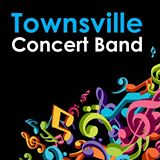

Bulletins
Posted 24-Mar-15
Volunteer Singers/Musicians

Our Parish Priest, Fr Mick Peters, is trying to development and foster a community for our 6 PM Vigil Mass at St Josephs on the Strand. I'm helping by organising an event format, where I invite our members to bring a plate for a buffet and I provide music, or friends who can sing or perform.
Now that we are achieving some success, we need more people who can sing or play music.
I'm open to any kind of singing or performing so long as it is not too controversial. My preference would be for an artist to sing a medley of old time favorites.
Mass starts at 6pm and finishes about 10 to 7.
If you would like to take part, please call Merle Trembath 0418882633 anytime
Posted 21-March-15
TCB logo CALL OUT For MUSOS
Calling all Muso’s, entertainers, performers. We are looking to book performers/musicians/entertainers for a family friendly festival at the Ingham Tyto Wetlands on the 23rd of May. This inaugural annual event is a family fun day in the parklands and we are looking for appropriate acts. We are looking for a wide variety of bands and entertainers from our local and surrounding areas.
Deadline for initial submissions 29 March 2015.
Artists will need to be insured for public liability.
If you are interested please email details, examples or links to your work and a quote including travel expenses for performing at the event to the Event Stage Manager Emile Griffiths -mutec.audio@gmail.com
See our Facebook page-Here!
Posted 17-Mar-15
John Rouvas Academy of Singing

I have been in the music industry in Sydney for over 30 years in the capacity of singing teacher, stage performer, singer and musician. My daughter Diana Rouvas was a finalist in the 2012 “The Voice” television show and she is a testament to what can be achieved with correct vocal training. Allow me to show you her technique and give yourself the opportunity to excel as a vocalist.
Skype lessons also available
Visit rouvasacademyofsinging.com.au or phone John 0404 044 823
Posted 09-Mar-15
Chord Organ Music teaching by Effortless Technique

Are you struggling to master sections of your pieces at tempo? Are you stressing that you won’t be prepared because you don’t have enough time to practice? Would you like to learn efficient and effective practice skills and strategies to help you play those difficult sections with confidence and ease and to the best of your ability?
Visit us on Facebook-Here!
Phone: 0423 626 501
Posted 17-March-15
The Metropolitan Opera

The Metropolitan Opera’s award-winning series of operas in HD continues featuring ten operas captured live in high definition direct from New York, and screening concurrently with the NY season.
Event Cinemas are considering bringing the Met Opera HD series to Townsville. If you would like to encourage them to go ahead, please email Alexis at support@eventcinemas.helpserve.com with a simple message such as, ‘Please bring Met Opera to Townsville’. You may of course add additional comments if you wish.
Posted 16-March-15
Office Administrator required!
The Townsville Community Music Centre is getting busier all the time, and we need a part-time Office Administrator. This is a long-term, part time, part-paid position (all conditions are negotiable). Experience with not-for profit organisations would be an advantage. We use MYOB and Microsoft Office, mostly Word and Excel.
For more information please Email us
 Townsville City Council
Townsville City Council

 Queensland Government
Queensland Government